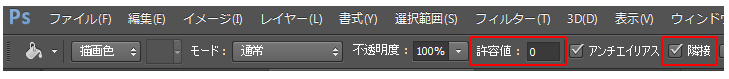

本項では、塗りつぶしツールを学習します。
[塗りつぶしツール]は、画像上でクリックしたピクセルと同じ色または近似色を持つ箇所を、
現在選択している「描画色」で塗りつぶすことができるツールです。
素材フォルダ「PS03」より素材ファイル3_3_1.psdを開きます。
[ツールパネル]から[塗りつぶしツール]を選択します。
※表示されていない場合は[グラデーションツール]を長押しすると、
[塗りつぶしツール]が表示されます。
塗りつぶす描画色を設定します。
[スウォッチパネル]から「RGBレッド」を選びましょう。
コントロールパネルの[許容値]を《0》に、[隣接]チェックボックスを[オン]に設定します。

画像内の左端にある濃い青の四角形をクリックすると、
クリックした箇所と同じ色の部分だけが赤色に塗りつぶされます。
塗りつぶしが確認できたら[ヒストリーパネル]などで、
塗りつぶす前の状態に戻しておきます。
許容値とは、クリックした箇所のピクセルの近似色の範囲を指定する値です。
0〜255までの数値を入力することで、塗りつぶされる範囲が変わります。
数値が低いほど近似色の範囲は狭くなり、
許容値を0にするとクリックした箇所とまったく同じ色の部分だけを塗りつぶします。
では、今度は許容値を《100》に設定を変更し、
先ほどと同じ箇所をクリックしてみると、
塗りつぶされる範囲が先ほどよりも広がります。
許容値の数値が高くなるほど、塗りつぶしの範囲は広がります。
自由に許容値を設定し直して、練習してみましょう。
練習し終わったら、次に進むために
[ヒストリーパネル]でファイルを開いた最初の状態に戻しておきます。
[隣接]のチェックボックスは、[塗りつぶしツール]でクリックした箇所と
隣接している色だけを塗りつぶすかどうかを設定するものです。
まずは[隣接]のチェックを「オン」にします。
許容値の数値はなんでもかまいません。
左端の濃い青の四角形の部分をクリックすると、
クリックした箇所と連続する箇所だけが塗りつぶされ、
同じ色を持つ円形の部分は塗りつぶされません。
[ヒストリーパネル]で一旦、塗りつぶす前に戻しておきます。
続いて [隣接]のチェックを「オフ」にして、先ほどと同じ箇所をクリックしましょう。
連続しない同じ色を持つ円形の部分も塗りつぶされます。
[隣接]のチェックボックスを「オフ」にすると、
画像内の対象となる色すべてを塗りつぶします。
練習を兼ねて、塗りつぶしツールで自由に色を塗っていきましょう。
以上でこの項の学習は終了です。
ファイルは閉じて次の項へ進んでください。